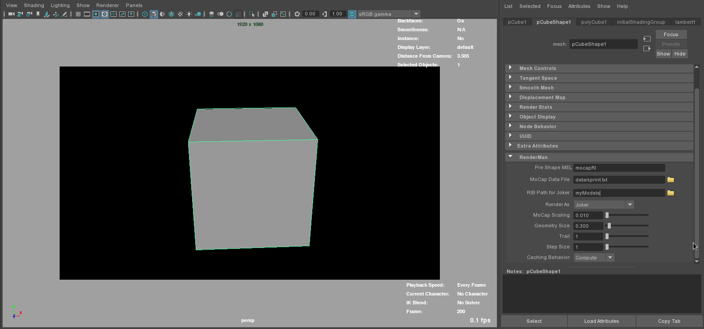
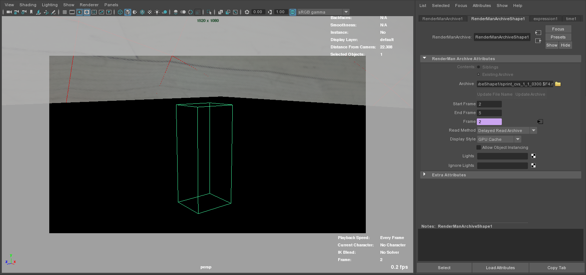

Python: Repurposing Mocap Data
A Python, Maya, and RenderMan workflow for extracting motion-capture data and repurposing it into renderable RIB archives and visualized 3D entities.
- Motion-capture data parsing and transformation into usable scene data
- Maya UI and RenderMan archive generation workflow
- Python, MEL, and RenderMan scripts for procedural mocap visualization
{kind=link}
{kind=link}
{kind=link}
{kind=link}
Final Result
Rendered mocap-driven result showing the repurposed motion data as visual scene elements.
Technical Breakdown
Breakdown of the workflow for generating archives and visualizing skeleton, volume, and character-driven mocap outputs.
{kind=link}
{kind=link}
{kind=link}
UI Description
Interface notes for selecting mocap source data and preparing the RenderMan archive workflow inside Maya.
{kind=link}
{kind=link}
UI Demonstration
Two-step workflow for generating and rendering RIB archives from motion-capture data.

Step 1 — Generate RIB Archives
- Create a proxy object, such as a polygon cube.
- Select the proxy and run mocapUI();.
- Select the proxy shape tab to display the interface.
- Browse for the mocap data file.
- Ensure there is a RIB_Archive folder in the Maya project directory.
- Set an end frame in Maya Render Settings.
- Run rman genrib;.

Step 2 — Render the RIB Archives
- Hide the proxy object.
- From the RenderMan menu, select Archives → Create Node.
- Browse for the first archive RIB and set the start/end frame.
- Change the numeric extension.
- Assign a material through the custom shading group on the transform node.
- Render an image and confirm that the baked geometry is correct.
Code
Python, MEL, and RenderMan files used for mocap archive generation, database handling, Maya project utilities, and UI controls.
Download the Source Code
Download the packaged mocap code files.